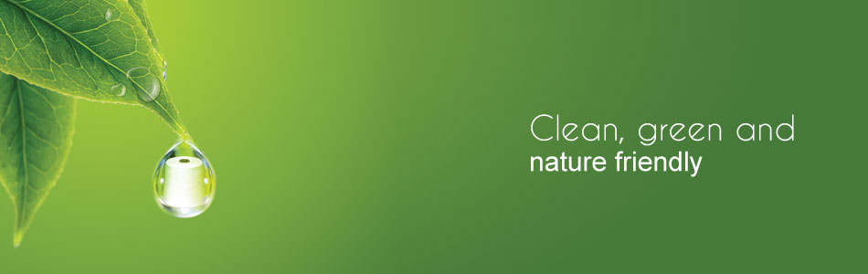
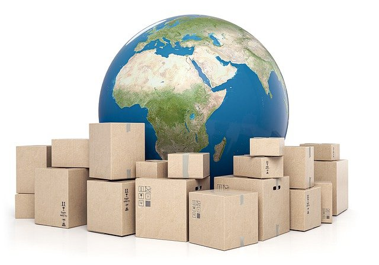

Eco-friendly products in Sri lanka

While developing a country is not a difficult task, think for a moment about how successful it is to develop a country in such a way as to protect the environment and not harm the environment. That's why we consider Sustainability as one of the most challenging lifestyle concepts to follow. But it is important that we prioritize that concept. we must remember that we can protect ourselves if we protect the environment too. Today, many companies as well as manufacturers in various fields are embracing the concept of eco-friendliness. As a result, it is expected that many eco-friendly products will be available in the market in Sri Lanka in the future. Among the products that can be expected are eco-friendly fashion products, decorative products, home appliances, kitchen appliances, Presumably, stationery, as well as eco-friendly buildings, will be popular. It can also be concluded that the focus is more on renewable energy products. We hope to see a greener Sri Lanka free of plastic and polythene in the future by creating alternatives to plastic and polythene and preventing them from harming the environment.
benefits of eco-friendly products
Often, because of the expense, customers do not purchase eco-friendly goods. While they might appear more costly, many of these products last longer and provide some advantages over other products, such as'
Improves Health

Eco-friendly goods and green buildings are safe because the components used do not contain toxic additives or ingredients. People are happy to realize that they need not subject themselves to the toxic elements caused by emissions. Environmentally friendly products and green buildings do not use plastic by-products which release toxic substances.
Cost-Savings on Energy Bills
Environmentally sustainable goods produce energy from the sun, such as solar panels. In power generation, they serve as an alternative to fossil fuels. They are non-renewable and do not consume coal, gas, and oil as materials.
Lower Maintenance
Environmentally friendly products require less maintenance due to less operation. For example, in an eco-friendly building, environmentally friendly facilities use large windows to let in natural light. As a result, artificial lighting usage is reduced and energy is saved.
Making things better & easier
It's not only eco friendly, of course, but its practicality and simplicity are also the key characteristics of these eco-friendly products. Switching to a healthier lifestyle can take some time, but your life will be much simpler once you get used to it. You don't really have to pay attention to what you're going to run out of because of the sustainability of our eco-friendly goods. In this manner. You will waste less time shopping and all the eco-friendly items in one location are readily accessible. Or online, you can buy. Think about how helpful, especially while traveling, non-plastic straws and bamboo toothbrushes are.
how to choose the best eco-products
You want to choose the right items for the health of your family, and you need them to be successful. If the product does not do the job it was intended to do, it does not really matter if the product appears to be environmentally friendly. Some forms of labeling show whether the brand is actually environmentally conscious or merely as a marketing tactic using natural ingredient statements. By selling products made with natural products and additives, many businesses are misleading customers. These label forms do not promise that the commodity is eco-friendly.Labels to understand include:
Our product to the Overseas

It is a fact that we all know that there has been a strong demand for Sri Lankan products all over the world since ancient times.There is also a strong demand for Sri Lankan eco-friendly products.There is a good demand for eco-friendly fashion products made in Sri Lanka in many countries.Among those countries, the United States of America, Italy, Brazil, England, New Zealand, and Australia are prominent.those have exported thousands of units annually and has brought in thousands of rupees in foreign exchange annually.It is also noteworthy that online shopping has made a significant contribution to this process.